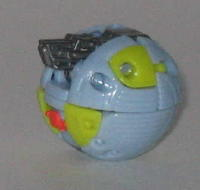
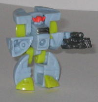
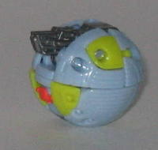
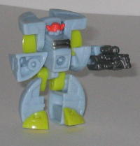
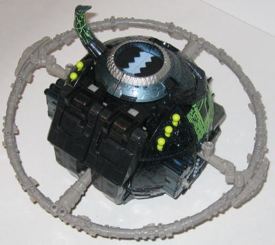
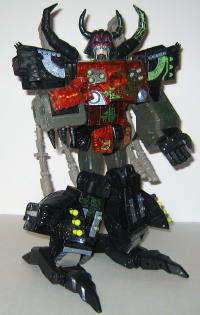

Dead
End
Dead
End
 
Allegiance : Minicon
Size : Mini-Con
Difficulty of Transformation : Very Easy
Color Scheme : Light sky blue, pea green, and some gunmetal gray and bright orange-red
Rating : 5.8
Unicron
w/ Dead End (Energon)
(NOTE: Because this set is a repaint, this is not a full-blown review. This mainly covers any changes made to the set and the color scheme, and merely compares it to Armada Unicron w/ Dead End. For a review on the mold itself, read the review of Armada Unicron w/ Dead End here .)
Dead
End


Allegiance
: Minicon
Size
: Mini-Con
Difficulty of Transformation
: Very
Easy
Color Scheme
: Light sky blue, pea
green, and some gunmetal gray and bright orange-red
Rating
: 5.8
As his upgraded Energon
version, Dead End end, in his moon mode, is supposed to somewhat resemble
a planet like Earth. Y'know, blue for oceans, green for continents, etc.
But it doesn't work. At all. One can tell that the green parts are just
pieces of plastic, not shaped a continent at all, not to mention that this
particular shade of green is NOT what continents look like from outer space,
nor is the blue the right shade, either. The bright orange helmet in robot
mode also looks rather garish. The gunmetal gray helps to offset all those
bright colors a little, but in the end, it's not enough to ruin the pukefest
that is Energon Dead End's color scheme. He's just not at ALL up for the
job of the Dark God's Little Helper.
No mold changes have
been made to Energon Dead End.
Dead End's actual mold
is okay, but his color scheme this time around is just awful, and doesn't
fit in with Unicron's at all. Still, you aren't buying a $50 toy for the
Minicon, are you?
Unicron


Allegiance
: N/A
Size
: Supreme
Difficulty of Transformation
: Very
Hard
Color Scheme
: Black, transparent
orange, dark gray, semi-transparent black, brownish gray, metallic blue-silver,
and some metallic violet, pea green, light sky blue, dark metallic silver,
metallic dark red, dark violet, bright green, and dull metallic green
Powerlinx ports
: 29 (3 gimmicked)
Rating
: 9.9
Hasbro has to do a lot
to a $50 toy to get me to buy a repaint of it half a year after the original
came out, but gosh darnit, they stole my money again. Energon Unicron has
got all the perks of Armada Unicron mold-wise, but then you add the absolutely
AWESOME color scheme that he's got... and you've got a bonafied winner.
Unicron's core color scheme is by itself great- the black and dark gray
is more suiting for a dark god than yellow, and the transparent orange
looks so EVIL and fiery. The metallic blue-silver accents work nicely,
too. But then you just add on all this green "Energon" detailing, and...
wow. I can't describe how awesome this stuff looks. In the robot mode,
it's primarily a kind of dull metalllic green- it's extremely intricate
in its detailing, and it's used very asymmetrically to simulate his body
slooowly being repaired by Energon. What's especially great about it is
that's it's almost invisible until you shine light directly on it, then
it positively shines back, almost like it's glowing. It's very cool. The
bright green paint wash used on some of his rubbery or transparent parts
is slightly less impressive, but it still looks great, really brings out
some of his detail, especially in on the top half of his planet mode, where
it looks absolutely beautiful against the semi-transparent black. And speaking
of his planet mode, being that it's not nearly as transparent as it was
the first time around, it hides his robot innards a lot better, which is
a big plus.
No mold changes have
been made to Energon Unicron.
Because of the sheer
awesomeness of both his mold AND his color scheme and paint detailing,
Energon Unicron has earned his place as the BEST. TRANSFORMER. EVER, at
least as of this writing (5/04). If you pick up only one Transformer, make
it this guy.
Review by Beastbot
(NOTE: During some of the earlier runs, Armada Unicron came packaged in Energon Unicron's box. Rest assured, it was just to get rid of some overstock- Energon Unicron isn't a super-limited run or anything.)